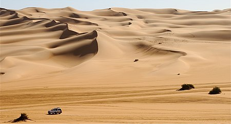
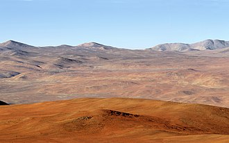
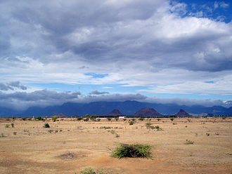
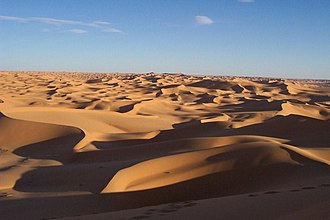

DESERTS
A desert is a barren area of landscape where little precipitation occurs and, consequently, living conditions are
hostile for plant and animal life. The lack of vegetation exposes the unprotected surface of the ground to
denudation. About one-third of the land surface of the Earth is arid or semi-arid. This includes much of the
polar regions, where little precipitation occurs, and which are sometimes called polar deserts or "cold
deserts". Deserts can be classified by the amount of precipitation that falls, by the temperature that prevails,
by the causes of desertification or by their geographical location.
-
CLASSIFICATIONS:
-
Deserts have been defined and classified in a number of ways, generally combining total precipitation,
number of
days on which this falls, temperature, and humidity, and sometimes additional factors. For example,
Phoenix,
Arizona, receives less than 250 mm (9.8 in) of precipitation per year, and is immediately recognized as
being
located in a desert because of its aridity-adapted plants. The North Slope of Alaska's Brooks Range also
receives less than 250 mm (9.8 in) of precipitation per year and is often classified as a cold desert.
Other
regions of the world have cold deserts, including areas of the Himalayas[24] and other high-altitude
areas in
other parts of the world. Polar deserts cover much of the ice-free areas of the Arctic and
Antarctic. A non-technical definition is that deserts are those parts of Earth's surface that have
insufficient vegetation cover to support a human population.
-
HISTORY:
-
People have been living in deserts for millennia. Many, such as the Bushmen in the Kalahari, the
Aborigines in
Australia and various tribes of North American Indians, were originally hunter-gatherers. They
developed
skills
in the manufacture and use of weapons, animal tracking, finding water, foraging for edible plants
and
using the
things they found in their natural environment to supply their everyday needs. Their self-sufficient
skills and
knowledge were passed down through the generations by word of mouth. Other cultures developed a
nomadic
way
of life as herders of sheep, goats, cattle, camels, yaks, llamas or reindeer. They travelled over
large
areas
with their herds, moving to new pastures as seasonal and erratic rainfall encouraged new plant
growth.
They took
with them their tents made of cloth or skins draped over poles and their diet included milk, blood
and
sometimes
meat.


DESERT RANGES IN PAKISTAN
Nature has blessed Pakistan with unique landscape, the high mountains; plateau plain, deserts and luring
sunny
beaches are found here. Pakistan is an amazing country for tourism in every aspect. Owing to its immense
natural
beauty, the country has also recently been accredited as the world’s top tourist destination for 2020. The
uniqueness of Pakistan’s topography is also backed by the fact that around 10% of its total land has been
covered with different types of barren lands, commonly known as deserts. Found in different regions across
the
country, the deserts of Pakistan are best-known for their unique features, which also differentiates them
from
each other. We are going to explore some interesting facts about these extremely vast and mysterious barren
lands of Pakistan.
Pakistan hosts five deserts which were historically forests. They include:
- Thar Desert in Sindh
- Cholistan Desert in Bahawalpur (Punjab)
- Thal Desert in Bhakkar (Punjab)
- Kharan Desert in Balochistan
